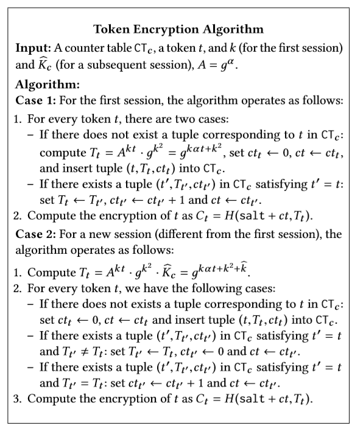
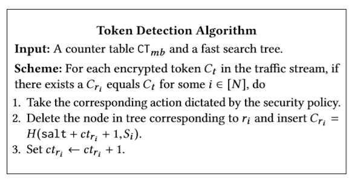

PrivDPI
论文原链接：
keywords：Network privacy; Encrypted traffic inspection; Middlebox privacy
研究的主要问题
在数据传输过程中，我们通常需要一个中间件来完成对传输内容的检测（不然，有人发敏感信息我们怎么拿住他❕），在传统模式里，赋予了中间件可解密信息的权力，他们通过对解密后的明文信息进行检测发现异常流量。However，现在人们十分注重个人隐私，我们不希望在传输过程中有中间者窥探我们的信息，但同时也不能让整个流量传输毫无监管。在这样的场景下，我们需要研究出一个能对密文关键词（敏感词）做检索的系统。可以想象，我们有一下安全需求：
- 传输的双方不可以通过手段获取我们的关键词检测规则，否则他们可以针对检测的关键词做绕过等小聪明处理
- 中间件不可以获取到任何有关明文的信息
已有研究成果
已有的BlindBox可以完成大多数的功能，如密文关键词检索
本论文主要贡献点
- 时间上通过每次会话只建立一次缩短，且关键词信息可重复使用
- 加密规则生成得更有效果
重点算法设计
这个图是整个系统最关键的组成部分。他们的角色分工如下：
RG：规则(rule)的制订者，他来告诉MB也就是做检测工作的工具人做事儿的规矩（MB：教我做事儿？？💢）。数学表达上，它传输过去的将是一个三元组。
MB：检测工具人，执行各种机械操作。他既不能知道C和S在交换什么小秘密，也不能去揣测上级RG大哥的具体规则要求，并且要为RG大哥的规则做掩护。因此简单来说，他主要是一个比对操作，用从RG处得到的规则来审查C。
C：👦
S：👩
Notation
TLS传输协议：
Obfuscated rule：
整体工作流程
Setup
完成基本准备工作，MB从RG那里获取规则集；C和S建立会话密钥key
Preprocessing
MB和C&&S交流得以获取一系列可重复使用的模糊规则（reusable obfuscated rule），所谓模糊就是这个过程要让双方都相互看不起，即MB无法得到C和S使用的key，同时C和S无法知晓MB从RG处得到的规则
Session Rule Preparation
在preprocessing阶段生成的reusable obfuscated rule是一个C/S交流过程中比较固定的参数，在它的基础上我们生成每个会话的session rule（至于为什么session rule和obfuscated rule不可以是一个，是因为我们不希望每次会话建立，每次会话密钥改变就重新走一套preprocessing的过程，很废时间），在这里可以把obfuscated rule看作是“seed🌱”。
Token Encryption
C将它要传输的数据tokenizes，生成的token在加密传输给MB
Token Detection
这一步主要就是由MB控制完成，他收到来自C的加密后的token，同时他手里有之前从RG里得到的rule以及在session rule preparation中得到的session rule。第一步，他先用session rule来加密他的rule(📄这里的rule定义有点多，要注意区分)，然后就是比对的工作了
Token Validation
这个工作仅当C/S中有一个是坏人的时候实施。方法是验证他们的token（这我还没理解清楚）
Setup
在setup过程中，我们规定了如下内容：
在RG中有很多rule，对于他的rule集合，我们取${r_i \in R}$（这里$R$是rule domain），对于每一个$r_i$，RG选择一个随机的$\alpha \in Z_p$，以及随机的$s_i \in Z_p$（这些随机的数字会方便之后来构造规则的保密性）。在前面选取的随机数基础上，我们计算出$A=g^a$，$R_i=g^{\alpha \cdot r_i+s_i}$，同时为了认证RG的身份，需要计算出$signs (R_i)$，最终RG把三元组$(s_i, R_i, signs(R_i))$发送给MB。
因为我们设计的是一个非对称密钥体系，所以需要设置公钥和私钥。公钥就是$A$，私钥则是CS握手建立TLS连接时产生的伪随机数，之后以这个伪随机数为源，生成以下三个keys：
- $k_{rand}$：作为生成之后的randomness的”seed🌱”，并且由于CS拥有的同样的$k_{rand}$，因此之后生成的随机序列也应当是一样的
- $k$：用来生成reusable obfuscated rules，以及随后的session rules，且$k \in Z_p$
- $k_{TLS}$：用来加密TLS传输的流量
Preprocessing Protocol
这一步需要在第一次TLS session建立完成后立马执行，目的在于建立一系列快速、可重复使用的obfuscated rule。
这个可重复使用的rule就是：
$$I_i=g^{k \cdot \alpha \cdot r_i +k^2}$$
在最简单情况中，这个$I_i$是通过MB与C的交流形成的， MB计算$R_i=g^{\alpha \cdot r_i+s_i}$传给C，C计算出$I_i$后再传给MB 。但是我们需要基于此，做一些优化以增强安全性保护。
- 为了防止MB出了异心，比如自己去构造一个$R_i$，因为这里面有关键词匹配，它就可以用来解读密文信息，我们添加了一个$signs(R_i)$，利用签名防伪性（这里需要C去验证签名）
- 为了防止C出现异心，比如传MB一个$k_c$，自己却用别的，或者在之后的由$k_c$生成的$k_i$中出岔子，MB必须做一定的检查，在检查第一个$k_c$时，通过去比对C传的和S传的是否相等来做（要是CS都是骗子，那没办法噢）；在验证后续的$k_i$是否正确时，MB直接自己一个个算，再和C比对。上述是可用的方法之一，论文后面有提到效率更高的方式
- 为了防止C去窥探到rule的秘密，我们生成$R_i$的时候加入了随机数，就是这个作用
Session Rule Preparation Protocol
流程图已经很明确地表示出算法的过程，这里只需要强调一点，即为了防止暴力攻击，在一定session结束后会重新启动一次preprocessing
Token Encryption Algorithm
这一步主要作用是C在操作，它需要将信息隐晦地传输给MB，而不能直接明文将关键词传输过去，因为之后MB要用session rule和它传输过来的内容做比对，因此C对文本的操作需要和MB保持一致性。
首先是一般文字$\rightarrow$token：最直接的是把整个单词记录下来放在8byte大小的token里，改进后可以设置前缀后缀，或者语句的边界（我们可以思考更新的方式）
token$\rightarrow$加密后的token：加密方式和MB的rule的加密方式一致（之前相当于已经商量出一个共同密钥了），同样也要区分第一次还是后续的
token的可重复使用：这里使用一个记录三元组的counter table，每次遇到新的再添加，已有的话主要增加次数或者因为整体更新后（上面一块提到过重新启动的问题）去更新参数，这样可以提升效率
token防频率攻击：这里token最后会有一个hash(AES)，并且加入随机salt。salt是根据$k_{rand}$生成的，所以也不需要每次和MB同步
Token Detection Algorithm
就是最后比较的步骤，其中$ct_{r_i}$指这个rule出现的次数，初始置为0。
fast search tree
可拓展的点
- 在获取token时加入机器学习的算法
- 使用区块链分布式算法